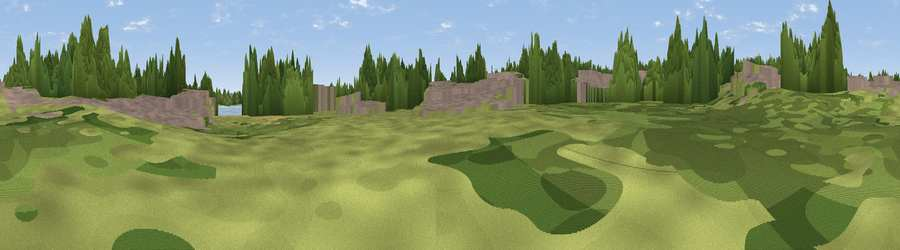

Viewpoint near Milton Keynes
#45635 in England · top 93% of its area beats it · near Milton Keynes · access?Where it is
The exact computed spot (SP 87263 40184). Click the marker for map links.
Public access: no public right of way or access land is recorded at this exact spot — it may be on private land. Computed from Natural England's CRoW access layer and OpenStreetMap rights of way — not the legal definitive map. Always verify locally.
The view, rendered

A 360° render of this exact spot computed from the terrain model, tree cover and land cover — summer colours, afternoon light, calibrated against photographs of famous viewpoints. Real trees, hedges and buildings will differ in detail.
The panorama
Grey silhouette: terrain skyline in each direction (720 bearings, Earth curvature and refraction included). Dashed green: skyline with trees (+15 m) and buildings (+8 m) as obstacles. Blue strip: how far the ground is visible on each bearing.
Where the view opens
Wedge length = distance to the farthest visible ground on that bearing (vegetation-aware). Rings at 10, 25 and 50 km.
What fills the view
38% woodland · 32% grassland · 22% built-up · 5% cropland · 3% water
Angular shares of the visible panorama (visual magnitude), not map area. Landscape diversity 0.58 (0–1 Shannon).
Key numbers
More beautiful places nearby
The staircase of upgrades: each row has a higher view potential than everything closer. Driving times are estimates from straight-line distance, calibrated against real road routing — check an actual route before setting out.
| Place | Direction | Drive | Score |
|---|---|---|---|
| Viewpoint near Moulsoe | ENE · 1 km | ~3 min | 13.9 |
| The Belvedere | WSW · 1 km | ~3 min | 15.3 |
| Viewpoint near Sherington | NNE · 6 km | ~13 min | 29.0 |
| Viewpoint near Bow Brickhill | SE · 7 km | ~14 min | 48.9 |
| Viewpoint near Totternhoe | SSE · 21 km | ~35 min | 50.8 |
| Viewpoint near Sharpenhoe | ESE · 22 km | ~36 min | 52.0 |
| Viewpoint near Sharpenhoe | ESE · 22 km | ~36 min | 54.0 |
| Viewpoint near Quainton | SW · 22 km | ~37 min | 64.9 |
52.05318, -0.72880 · source: osm viewpoint · position refined by local search. Computed location — check access rights before visiting.